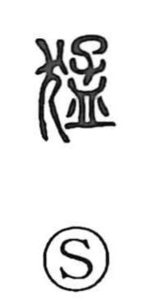

猛

Kun: takeshi, takeru | On: mou
fierce ・ strong ・ violent ・ vehement
Explanation
Shirakawa reads 猛 as a phono-semantic character: the dog radical 犭 supplies the field of meaning, while 孟 functions as the phonetic that signals the on-yomi mou. In early lexica it is defined concretely as a “fierce dog,” and related forms such as 獳 are glossed as the figure of an enraged dog; the binome 獳猛 originally described a dog’s wild, violent temperament. From this vivid image the sense broadened to the general qualities of being fierce, strong, or vehement. Classical usage preserves this extension, as in the Book of Rites: 苛政猛於虎也—“oppressive rule is fiercer than a tiger.”